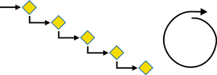
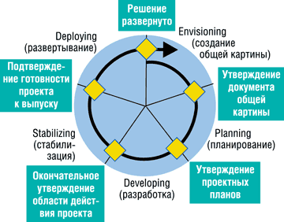
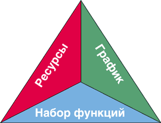

Андрей Колесов
Обзор подготовлен на базе материалов, представленных в учебном курсе для подготовки к экзамену по программе сертификации Microsoft Certified Solution Developer N 70-300: Analyzing Requirements and Defining Microsoft .NET Solution Architectures. Русский перевод этого курса выпущен в 2004 г. издательством "Русская Редакция" под названием "Анализ требований и создание архитектуры решений на основе Microsoft .NET".
В последние годы мы видим, что ведущие поставщики средств разработки ПО (в первую очередь IBM Rational и Borland) от выпуска отдельных инструментов переходят к созданию комплексных платформ управления жизненным циклом приложений (application lifecycle management, ALM). Microsoft (http://www.microsoft.com) пока не форсирует процесс формирования полного спектра ALM-решений для автоматизации различных этапов производства ПО, хотя движется именно в этом направлении (об этом свидетельствуют последние новости с конференции TechEd'2004, см. врезку), и основной акцент делает на средствах проектирования и разработки - Visio, Visual Studio и т. д.
Однако для реализации идеологии ALM на практике необходим не только набор инструментов сам по себе, но и общая методологическая база. Microsoft уже более десяти лет занимается развитием собственной ALM-методологии под названием Microsoft Solutions Framework (MSF). Может показаться неожиданным, но MSF в целом - по сути платформно-независимая методология, детально описывающая отдельные процессы на уровне абстракций. Инструменты самой Microsoft присутствуют в ней в минимальной степени, лишь как примеры реализации тех или иных рекомендаций. Вместе с тем, хотя и неявно, концепция эта четко выражает общую нацеленность средств разработки корпорации (круг задач, для решения которых они предназначены), что очень хорошо видно из анализа динамики ее развития. Так, если десять лет назад MSF была ориентирована на создание локальных клиентских приложений, то сегодня - на разработку и внедрение сложных систем масштаба предприятия.
Структура процессов MSF
Говоря о моделях процессов жизненного цикла проектов разработки ПО, в первую очередь нужно упомянуть о двух основных схемах: водопадной и спиральной (рис. 1), которые отражают два разных подхода к организации этих работ.
|  | Рис. 1. Водопадная и спиральная модели разработки.
|
Водопадная модель предусматривает четкий переход от этапа к этапу: работы следующего этапа начинаются только после выполнения всех задач предыдущего. Такой стиль подходит для проектов, в которых проектные требования четко определяются заранее и с большой вероятностью не будут корректироваться потом. Данная схема организации разработки очень удобна с точки зрения управления проектом, так как позволяет четко сформулировать состав и обязанности его участников и контролировать графики выполнения проекта.
Спиральная модель обычно ориентируется на крайний случай, когда требования и параметры проекта непрерывно корректируются, а новые требования формулируются лишь по мере необходимости выполнения конкретных работ. Такая схема часто ассоциируется с понятием "экстремальной разработки"; при этом исполнитель и заказчик работают в постоянном тесном сотрудничестве, клиент привлекается на каждом этапе, формулируя свои соображения по поводу созданных компонентов. Однако при такой организации очень велик риск, что процесс разработки выйдет из-под контроля, поэтому реально данная модель используется лишь в относительно небольших проектах.
Однако проблема заключается в том, что чаще всего все требования на задание действительно практически невозможно определить заранее, к тому же даже сформулированные требования подвергаются коррекции. Но тогда требуется повысить уровень управляемости проектом, без чего создание сложного ПО просто невозможно. Компромисс между этими противоречивыми требованиями и предоставляет модель процессов MSF, в которой сочетаются водопадная и спиральная модели разработки: проект реализуется поэтапно, с наличием соответствующих контрольных точек, а сама последовательность этапов может повторяться по спирали (рис. 2).
|  | Рис. 2. Этапы и контрольные точки модели MSF.
|
В этом случае планирование на основе промежуточных контрольных точек и предсказуемость водопадной модели дополняются наличием обратной связи с заказчиком и творческим подходом к решению задач, характерными для спиральной модели. Таким образом, модель процессов MSF позволяет создавать и развертывать решения уровня предприятия, обеспечивая прогнозируемость хода проектов и учитывая реальные условия их выполнения.
Создание общей картины приложения
На этом этапе решаются следующие основные задачи:
- определение состава команды;
- определение структуры проекта;
- определение бизнес-целей;
- оценка существующей ситуации;
- создание документа общей картины и области действия проекта;
- определение требований и профилей пользователей;
- разработка концепции решения;
- оценка риска;
- закрытие этапа.
На этапе выделяются две промежуточные контрольные точки: "Организован костяк команды" и "Создана общая картина решения".
Организован костяк команды. Здесь не обязательно нужен полный поименный список команды, но в документе структуры проекта должны быть определены роли и обязанности каждого члена команды, а также описана иерархия отчетности и ответственности в группе, каналы взаимодействия с заказчиком и общая структура команды.
Создана общая картина решения. Речь идет о разработке концепции решения, которым должна руководствоваться команда для достижения долгосрочных бизнес-целей проекта. Область действия проекта определяет, что включается в контекст проекта, а что выходит за его рамки. На этой временной точке речь идет о создании первой версии документа, который находится в стадии рецензирования участниками команды и согласования заказчиком.
Этап завершается контрольной точкой "Утверждение документа общей картины и области действия проекта".
Планирование
На этапе планирования команда решает, что нужно разработать, и формирует планы реализации продукта. Готовится функциональная спецификация, создается проект решения, детализируются планы работы, выполняется оценка стоимости и сроков получения результатов.
На этом этапе проводится анализ требований, которые делятся на бизнес-требования, пользовательские, функциональные и системные требования. После сбора и анализа требований команды разрабатывается проект решения, определяются профили пользователей, после чего формируются сценарии применения решения, выполняемые пользователями одного типа, а затем определяются варианты использования системы.
Этап состоит из трех стадий: концептуальное, логическое и физическое проектирование. На стадии концептуального проектирования задача рассматривается с точки зрения пользовательских и бизнес-требований и заканчивается определением набора сценариев использования системы. При логическом проектировании задача рассматривается с точки зрения проектной команды, решение представляется в виде набора сервисов. И уже на стадии физического проектирования задача рассматривается с точки зрения программистов, уточняются используемые технологии и программные интерфейсы.
В ходе данного этапа решаются такие задачи:
- разработка проекта и архитектуры решения;
- создание функциональной спецификации;
- разработка планов проекта;
- разработка календарного графика;
- создание среды разработки, тестирования и пилотной эксплуатации;
- закрытие этапа.
Контрольные точки этапа планирования связаны с достижением следующих результатов:
- функциональная спецификация;
- план управления рисками;
- определение среды разработки и тестирования;
- генеральный план и календарный график проекта.
Результаты данного этапа служат для принятия компромиссных решений в дальнейшем.
Разработка
На этапе разработки создается решение, в том числе пишется и документируется код. В начале этого этапа команда проверяет выполнение всех задач, характерных для предыдущих этапов, а затем приступает к решению следующих задач:
- создание прототипа приложения;
- разработка программных компонентов приложения;
- создание решения (последовательность ежедневных или более частых сборок приложения);
- закрытие разработки (реализация всех функций, поставка кода и документации).
Результаты этапа предполагают следующие элементы:
- исходный текст кода и исполняемые файлы;
- сценарии установки и конфигурации для развертывания;
- окончательная функциональная спецификация;
- элементы поддержки решения;
- спецификации и сценарии тестирования.
Основная контрольная точка этапа - "Окончательное утверждение области действия проекта". В этот момент все функции продукта готовы и прошли тестирование в рамках своего модуля. После этого продукт готов к внешнему тестированию и стабилизации. Кроме того, заказчики, пользователи, сотрудники службы поддержки и сопровождения, а также ключевые участники проекта могут предварительно оценить продукт и указать все недостатки, которые нужно устранить до его поставки.
Стабилизация
Данный этап - подготовка к выпуску окончательной версии продукта, доводка его до заданного уровня качества. Здесь выполняется комплекс работ по тестированию (обнаружение и устранение дефектов), а также проверяется сценарий развертывания продукта и проводится пилотная эксплуатация.
Тестирование подразумевает следующие основные виды работ:
- тестирование компонентов;
- тестирование баз данных;
- тестирование инфраструктуры;
- тестирование защиты;
- тестирование интеграции;
- анализ удобства работы с продуктом;
- нагрузочное тестирование (включая анализ ресурсоемкости и производительности);
- регрессивное тестирование;
- ведение отчетности по тестированию.
Когда решение становится достаточно устойчивым, проводится его пилотная эксплуатация в тестовой среде с привлечением пользователей и применением реальных сценариев работы.
Один из главных показателей этапа стабилизации - число обнаруженных ошибок. Сходимость этой величины в сторону устойчивого уменьшения - признак того, что близится завершение работ над продуктом. Важнейшая промежуточная контрольная точка - появление версии, в которой усилиями самой проектной команды не обнаружено ни одной ошибки. Далее следуют выпуски кандидат-релизов продукта для их исследования в условиях пилотной эксплуатации. Завершающая контрольная точка - подтверждение готовности продукта к выпуску и полноценному развертыванию в промышленной среде.
Развертывание
На этом этапе выполняется установка решения и необходимых компонентов окружения, проводится его стабилизация в промышленных условиях и передача проекта в руки группы сопровождения. Кроме того, анализируется проект в целом на предмет уровня удовлетворенности заказчика. Основные контрольные точки данного этапа таковы:
- развернуты основные компоненты;
- развернуто решение в целом;
- развернутое решение стабилизировано;
- решение развернуто и передано в эксплуатацию заказчику.
Следует подчеркнуть, что момент завершения данного этапа бывает достаточно сложно формально определить, так как выявление неполадок может продолжаться и в ходе промышленной эксплуатации. Именно поэтому необходимо четко сформулировать критерии для завершающей контрольной точки этапа развертывания и не пытаться отладить абсолютно все.
Комментарии по поводу этапов работ
Добавим к изложенному выше несколько важных замечаний. В целом те же самые идеи лежат в основе всех современных промышленных методологий разработки ПО (IBM/Rational, Borland, Microsoft и т. д.). И здесь нет ничего удивительного: именно этим отличаются выверенные временем технологии от кустарного производства. Но в то же время в каждой методологии есть свой подход к выделению различных этапов разработки и зачастую используется собственная терминология, что усложняет проведение параллелей между ними. Проблема эта усугубляется и отсутствием устоявшейся русской терминологии.
Общепринятый на сегодня список ALM-этапов, которого, в частности, придерживаются Borland и Rational, выглядит следующим образом:
- Defining (определение требований);
- Designing (анализ и проектирование);
- Developing (разработка);
- Testing (тестирование);
- Deploying (развертывание).
Как легко заметить, модель MSF предлагает несколько иную разбивку на этапы и их наименование. Хотелось бы обратить внимание читателей, что речь здесь не идет просто о разных названиях одних и тех же видов деятельности. Объективная проблема категоризации заключается в том, что выделение самостоятельных этапов в жизненном цикле приложений весьма условно, особенно если речь идет об итерационной циклической модели разработки. Например, широкое использование визуальных методов проектирования с автоматической генерацией кода фактически стирает грань между проектированием и кодированием. А тестирование вообще пронизывает всю жизнь программы.
Имеются и субъективные факторы, которые определяются различиями стратегических бизнес-целей разных поставщиков методологий. Именно этим объясняется то, что Microsoft - основу бизнеса которой составляют не средства разработки, а платформенное ПО, - больше внимания (по сравнению с теми же Rational и Borland) уделяет общим вопросам организации процесса создания приложений, а также их внедрению.
Поэтому, например, этап Envisioning включает определение не только требований к ПО, но и состава команды (здесь содержатся, в частности, очень интересные рекомендации касательно ролевой модели команды разработчиков, а также возможных вариантов совмещения ролей). А этап Stabilizing подразумевает не только собственно тестирование, но и фактически опытную эксплуатацию ПО, на которой могут уточняться исходные требования заказчика. Что уж говорить об особом акценте Microsoft на задачах развертывания решений...
Microsoft для разработчиков - новости с TechEd'2004На проходившей в конце мая в Сан-Диего (шт. Калифорния, США) конференции Microsoft TechEd'2004 был сделан целый ряд важных объявлений относительно развития средств разработки, новых инициатив в области безопасности информационных систем и поддержки жизненного цикла продуктов Microsoft. На конференции были представлены два новых инструмента, предназначенных для интеграции с текущей версией Visual Studio .NET 2003. Первый из них, Web Services Enhancements 2.0 (WSE 2.0), позволяет повысить уровень безопасности создаваемых Web-сервисов за счет использования самых последних спецификаций протоколов WS-Security (на базе утвержденных в 2004 г. стандартов OASIS), в том числе WS-Policy, WS-Security Policy, WS-Trust и WS-SecurityConversation. Версия WSE 2.0 для VS.NET доступна уже сейчас. Кроме того, Microsoft планирует использовать эту технологию для решения задач интеграции данных и приложений: специальный модуль BizTalk Server Adapter for WSE 2.0 представлен пока лишь в виде предварительной технической версии. Второй инструмент - Microsoft Office Information Bridge Framework (IBF), реализованный сейчас в виде бета-версии, - дает возможность использовать Microsoft Office в качестве интеллектуальных клиентских приложений при работе с Web-сервисами, созданными с помощью WSE 2.0. IBF представляет собой набор из нескольких компонентов, предназначенных для разработчиков и пользователей. Один из них устанавливается со стороны Office 2003 Pro и обеспечивает взаимодействие с IBF-приложениями прямо из офисных документов через смарт-теги. Второй компонент IBF - конструктор Information Bridge Metadata Designer, подключаемый к среде VS.NET и обеспечивающий визуальную разработку Web-сервисов с использованием модели безопасности WSE 2.0. В состав IBF входит также Information Bridge Metadata Service - серверный программный модуль, позволяющий передавать на клиентское ПО данные от запущенных на выполнение бизнес-приложений через Web-сервисы. Однако для разработчиков, пожалуй, наиболее интересна информация о намерении существенно расширить в VS.NET возможности управления всем жизненным циклом приложений. Представленная на TechEd'2004 версия Visual Studio 2005 (кодовое имя Whidbey) Enterprise Edition получила название Visual Studio Team System (VSTS). Предполагается, что эта система будет поставляться в трех основных вариантах: Team Architect, Team Developer и Team Test. Предназначенный для архитекторов программных решений инструмент Team Architect включает три конструктора для проектирования распределенных приложений, моделирования логической инфраструктуры и автоматической генерации кода. Последний из них (class designer) выполняет двухстороннюю синхронизацию между визуальной моделью проекта и программным кодом. Примечательно, что в нем используется не классический UML, а собственная нотификация языка моделирования Microsoft. Для поддержки UML в Visual Studio будет по-прежнему использоваться Visio, но встроенные средства самого VS развиваются в несколько ином направлении. Team Developer включает набор инструментов, обеспечивающих выполнение статического анализа и профилирования программного кода, определение степени покрытия кода при тестировании и решение ряда других задач. Эти инструменты можно применять непосредственно в среде разработки приложения, что существенно повышает эффективность процесса отладки. Следует отметить, что Team Architect представляет собой развитие средств, уже имеющихся в текущей версии VS 2003. Функциональность же Team Developer лишь в незначительной степени покрывается текущей версией VS.NET 2003, для эффективного решения подобных задач сегодня требуется подключать соответствующие расширения для VS от третьих фирм. Но в VS 2005 разработчики смогут применять встроенные средства самой Microsoft. Что же касается третьей составляющей VSTS - Team Test, предназначенной для нагрузочного тестирования приложений, то данная функциональность ранее была доступна лишь в автономных продуктах других поставщиков. Теперь же она появилась непосредственно в среде VS 2005, причем в исполнении Microsoft. При этом особое внимание будет уделено задачам тестирования Web-сервисов, в том числе с использованием скриптов, работающих с различными транспортными протоколами, и режимов удаленного мониторинга. Из всей этой информации следует, что Microsoft наращивает возможности своего инструментария в направлении создания комплексных систем масштаба предприятия, включая в него средства автоматизированной поддержки всех этапов жизненного цикла приложений и постепенно вытесняя соответствующие расширения от третьих фирм. Тем не менее многие независимые поставщики одобрительно восприняли сделанные объявления, так как новшества VSTS позволят поднять на качественно новый уровень сотрудничество в рамках "партнерской экосистемы VS", охватывающей несколько десятков компаний-разработчиков. В частности, о своей поддержке будущего продукта на TechEd'2004 уже заявили Borland, Compuware, Telelogic AB и Unisys. |
Формирование проектных команд
Один из ключевых элементов реализации проекта - задача управления коллективом его участников. Поэтому наряду с моделью процессов в MSF детально проработана модель команд (MSF Team Model), которая исходит из важности четкого понимания ролей, обязанностей и задач отдельных ее членов, а также их повышенной ответственности за реализацию проекта в целом. Она может применяться в соответствии с потребностями и контекстом проекта, размером коллектива и опытом участников команды. Ниже коротко охарактеризованы роли, используемые в модели команд MSF.
Менеджер продукта (product manager) отвечает за управление связями с клиентом. На этапе проектирования он собирает требования заказчика и ведет контроль за тем, чтобы они соответствовали потребностям его бизнеса. Он также разрабатывает план взаимодействия с клиентом в ходе реализации проекта, в том числе организует встречи с клиентом, демонстрации продукта и другие маркетинговые акции.
Менеджер программы (program manager) управляет собственно разработкой ПО и несет ответственность за его поставку в соответствии с утвержденными спецификациями.
Разработчик (developer) занимается разработкой ПО в соответствии с заданными спецификациями.
Тестировщик (tester) выявляет и устраняет все неполадки в продукте и дает окончательное разрешение на его выпуск. Он также оценивает соответствие набора реализованных в продукте функций общей концепции и области действия проекта.
Менеджер по выпуску (release manager) отвечает за развертывание и поддержку продукта, проверяет корректность ИТ-инфраструктуры заказчика на предмет ее готовности к эксплуатации ПО.
Специалист по удобству использования (user experience specialist) занимается изучением и решением проблем пользователей, оценивает продукт с точки зрения соответствия их потребностям.
Конечно, в небольшом проекте отдельным членам команды приходится совмещать несколько ролей. Тут возможны разные варианты в зависимости от квалификации и опыта сотрудников, а также специфики проекта, но все же нужно придерживаться определенных правил относительно "совместимости" ролей (см. таблицу). Например, обратите внимание, что разработчику не рекомендуется выполнять какие-то еще роли.
Возможное совмещение ролей в проектной команде
| Менеджер продукта | Менеджер программы | Разработчик | Тестиров-щик | Менеджер по выпуску | Специа-лист по удобству исполь-зования | |
| Менеджер продукта | - | - | + | -+ | -+ | |
| Менеджер программы | - | - | -+ | + | -+ | |
| Разработчик | - | - | - | - | - | |
| Тестиров-щик | + | -+ | - | + | + | |
| Менеджер по выпуску | -+ | + | - | + | -+ | |
| Специалист по удобству исполь-зования | + | -+ | - | + | -+ | |
| Примечание: "-" - совмещение не рекомендуется, "-+" - нежелательно, "+" - возможно. | ||||||
Кроме собственно исполнителей проекта, в команду могут входить и другие лица:
- инициатор, или спонсор проекта, который обычно также принимает решение об одобрении проекта;
- заказчик (бизнес-спонсор) - тот, кто получает деловую выгоду от проекта;
- пользователи - группа лиц, непосредственно работающих с решением;
- группа поддержки решения, отвечающая за его сопровождение после развертывания.
Управление компромиссами
Одна из основных проблем любого проекта - возможные нарушения графиков или перерасход бюджета. Главная причина этого - нечетко описанная область действия проекта, которая определяет, какие задачи должен решать продукт, а какие не относятся к его компетенции. Поэтому для эффективного управления проектом необходимо следующее:
- определить ограничения, накладываемые на проект;
- организовать управление компромиссами;
- организовать управление изменениями;
- обеспечить мониторинг проекта.
Управление компромиссами подразумевает достижение баланса всех составных частей проекта, когда в команде осознают, что в выделенное время не удастся решить все поставленные задачи. Проектная группа и заказчик должны постоянно анализировать компромиссы и быть готовыми к нелегкому выбору между разрастанием бюджета (в том числе несоблюдением сроков) проекта и полнотой его функциональности.
Как известно, в любых проектах существует вполне определенная связь между такими его параметрами, как ресурсы, график и набор функций (рис. 3). Любое изменение одного из компонентов требует корректировки других. Поэтому залог успешного создания продукта, отвечающего требованиям заказчика, - определение и обеспечение оптимального баланса между ресурсами, датой поставки и функциональностью.
|  | Рис. 3. Треугольник компромиссов.
|
Для решения этих непростых задач лучше всего использовать матрицу компромиссов, в которой все перечисленные компоненты делятся на обязательные, желательные и факультативные (последние можно исключить или отложить до следующей версии). Продемонстрировать работу матрицы компромиссов можно на примере такого шаблона фразы:
Учитывая, что зафиксировано ____________, мы определим _____________ и в случае необходимости скорректируем ____________________.
Вставляя переменные из определенной заранее матрицы компромиссов, можно получить формулировку, соответствующую целевой задаче проекта, например:
Учитывая, что зафиксированы РЕСУРСЫ, мы определим ГРАФИК и в случае необходимости скорректируем ФУНКЦИОНАЛЬНОСТЬ.
В заключение отметим, что есть и еще одна важная характеристика проекта - качество. Но это как раз тот показатель, который следует жестко зафиксировать. При разработке программных продуктов ни в коем случае не нужно превращать треугольник компромиссов в тетраэдр.
Русская версия Visual Basic .NETВ отличие от продуктов Microsoft массового спроса (Windows, Office), которые переведены на несколько десятков национальных языков, средства разработки Visual Studio .NET представлены сейчас лишь восемью локализованными версиями (французская, немецкая, испанская, итальянская, японская, корейская и два варианта китайских). Освоение русского языка началось лишь в этом году с одного инструмента, но зато самого массового, Visual Basic .NET Standard Edition (поставки его начались в мае 2004 г.). Чтобы представить себе значимость этого проекта, нужно иметь в виду, что полный объем локализации VS.NET 2003 составляет около 20 млн слов (включая всю справочную систему), что существенно превышает аналогичные показатели всего пакета Microsoft Office 2003. VB.NET Standard - это подмножество VS.NET, объем его локализации - 5,6 млн слов. Нужно отметить, что редакция Standard не пользовалась до сих пор большим спросом со стороны профессиональных разработчиков. Тем не менее, по мнению сотрудников московского представительства Microsoft, наличие русской документации непременно повысит интерес разработчиков к VB.NET Standard, тем более что, несмотря на усеченные функции по сравнению с версией VS.NET Pro, с помощью этого инструмента можно создавать весьма широкий круг приложений, компонентов и Web-сервисов промышленного уровня. В отличие от VS.NET Pro, VB.NET Standard не может создавать элементы управления для Windows и Web, мобильные приложения, а также мощные серверные решения. Конечно же, в VB.NET не входят другие языки программирования - VC++, VC# и VJ#. Но подчеркнем, что VS.NET Pro стоит более 1000 долл. (вариант Upgrade - 550 долл.), а VB.NET Standard - всего 100 долл. И все же появление русского VB.NET в основном связано с намерением Microsoft активно продвигать свои инструментальные средства в более широкие круги программистов, в первую очередь - в сферу образования, в частности, подготовки разработчиков. Что касается перспектив расширения линейки русскоязычных средств разработки, сотрудники Microsoft говорят об этом достаточно осторожно. Однако вероятность появления русской версии будущей VS 2005 представляется достаточно большой. |